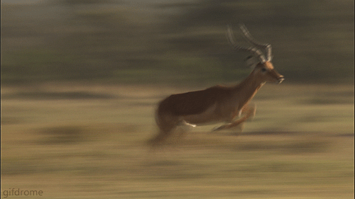

Impala is a type of antelope that can be found only in Africa. It lives in grasslands, savannas and on the edges of
woodlands in South and East Africa. Besides sufficient amount of grass, impala requires permanent water supply in its habitat.
Biggest threat to survival of impalas (besides predators) is commercial hunt. Black-faced impala is one of the subspecies of
impalas that is endangered as a result of over-hunting.